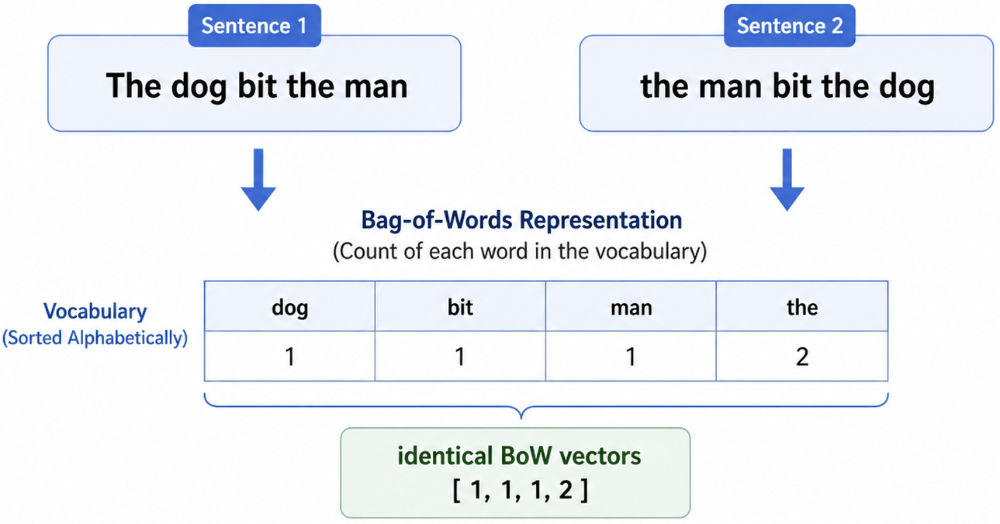
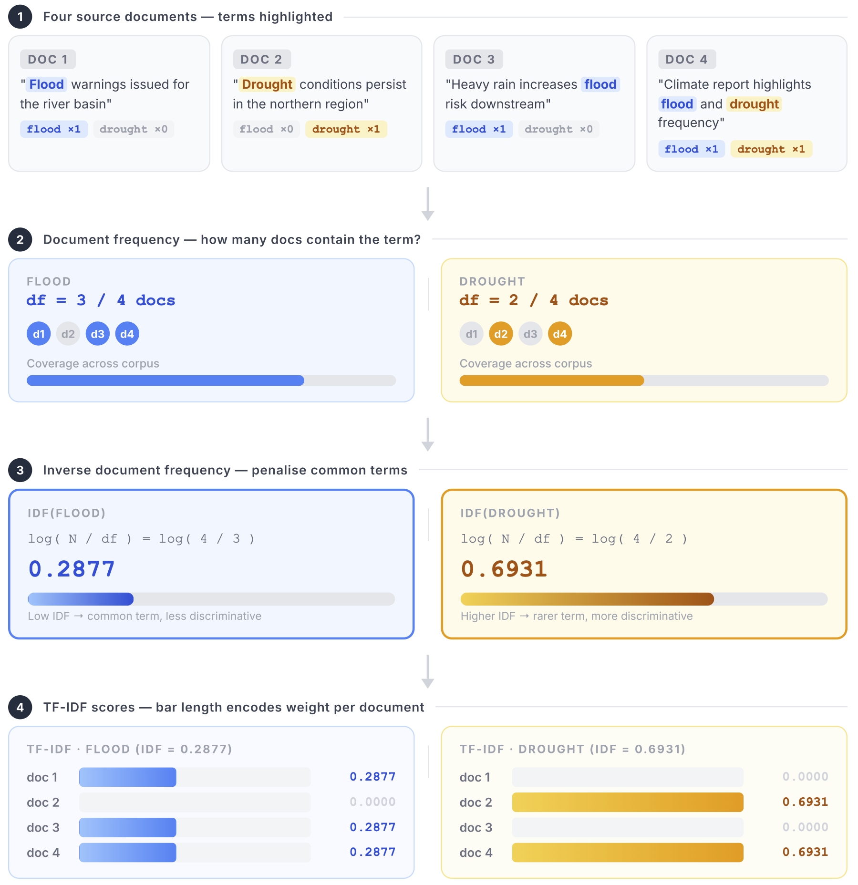

Remark
These lecture notes are in early access and will continue to evolve based on classroom experience and feedback.
2.2. Bag-of-Words and TF–IDF in Practice#
Section Goal
By the end of this section you will understand the bag-of-words model, be able to derive TF–IDF weights from first principles, compute them by hand for a small corpus, apply them with scikit-learn, and critically evaluate their impact on a downstream classification task.
2.2.1. Learning objectives#
By the end of this section, you should be able to:
Construct bag-of-words document–term matrices from a small corpus.
Define term frequency (TF) and inverse document frequency (IDF) and explain their motivations.
Compute TF–IDF weights by hand for at least one example.
Use scikit-learn to build TF–IDF features and inspect their values.
Extend BoW to bigrams and explain when n-gram features are useful.
Build an end-to-end text classification pipeline using TF–IDF features.
Relate encoder choices to downstream performance on simple benchmarks.
2.2.2. From counts to bag-of-words#
The bag-of-words (BoW) model [Manning et al., 2008] represents each document by the multiset of vocabulary items it contains, ignoring word order. Conceptually, a BoW representation is a histogram over tokens [Manning et al., 2008]:
Despite its simplicity, BoW often performs surprisingly well for tasks such as topic classification and sentiment analysis, especially when combined with suitable weighting schemes.
What information is discarded?
“The dog bit the man” and “the man bit the dog” produce identical BoW vectors. Order, syntax, and discourse structure are all lost. For many classification tasks this is acceptable; for tasks that require understanding of compositional or relational meaning — such as question answering or logical inference — it is not.
{kind=link}

Fig. 2.5 Bag of Words Loses Word Order#
Bag-of-Words is acceptable for some classification tasks where word presence/frequency matters (e.g., spam detection, topic classification). It is not suitable for tasks that require understanding word order or meaning, such as question answering, translation, or logical inference.
2.2.2.1. Example: bag-of-words with CountVectorizer#
The example below extends the count-based encoding from the previous section.
Document–term matrix (counts):
| basin | climate | conditions | downstream | drought | flood | frequency | heavy | highlights | increased | increases | issued | |
|---|---|---|---|---|---|---|---|---|---|---|---|---|
| doc1 | 1 | 0 | 0 | 0 | 0 | 1 | 0 | 0 | 0 | 0 | 0 | 1 |
| doc2 | 0 | 0 | 1 | 0 | 1 | 0 | 0 | 0 | 0 | 0 | 0 | 0 |
| doc3 | 0 | 0 | 0 | 1 | 0 | 1 | 0 | 1 | 0 | 0 | 1 | 0 |
| doc4 | 0 | 1 | 0 | 0 | 1 | 1 | 1 | 0 | 1 | 1 | 0 | 0 |
Observe that:
doc4 shares the words “flood” and “drought” with doc1 and doc2, making it a candidate for similarity-based retrieval.
High-frequency stopwords like “the”, “and”, “in” are removed, so the matrix focuses on content words.
2.2.3. Why TF–IDF?#
Raw counts treat all tokens equally — but they clearly are not equal. Consider the word “the”: it appears in virtually every English document and tells us almost nothing about the document’s topic. Conversely, a term like “inundation” is so specific that its presence in a document is highly informative.
TF–IDF (Term Frequency–Inverse Document Frequency) [Manning et al., 2008] addresses this by rewarding specificity: a word that is frequent in a particular document but rare across the corpus is likely characteristic of that document and therefore receives a high score.
The TF–IDF score is the product of two components [Manning et al., 2008]:
2.2.3.1. Term frequency (TF)#
TF measures how often term \(t\) appears in document \(d\). The raw count can be normalized in several ways:
Variant |
Formula |
When to use |
|---|---|---|
Raw count |
\(\text{TF}(t,d) = f_{t,d}\) |
Simplest; works for short, similar-length documents |
Log normalized |
\(\text{TF}(t,d) = 1 + \log f_{t,d}\) if \(f_{t,d} > 0\), else 0 |
Reduces the effect of very frequent terms; common in information retrieval |
Binary |
\(\text{TF}(t,d) = \mathbf{1}[f_{t,d} > 0]\) |
Ignores repetition; suitable when presence/absence matters more than count |
2.2.3.2. Inverse document frequency (IDF)#
IDF measures how rare term \(t\) is across the \(N\)-document corpus. A term that appears in every document is not useful for distinguishing documents, so it receives a low IDF weight. A term that appears in only one or two documents receives a high IDF weight.
The classic IDF formula is [Manning et al., 2008]:
where \(|\{d : t \in d\}|\) is the document frequency \(\text{df}(t)\) — the number of documents that contain term \(t\) at least once.
Scikit-learn’s smoothed IDF
Scikit-learn’s TfidfVectorizer uses a slightly different, smoothed formula to avoid division by zero and to prevent IDF from being 0 for terms that appear in all documents [scikit-learn Developers, 2023]:
The smoothing adds 1 to both numerator and denominator. The extra +1 at the end ensures that terms appearing in every document still receive a positive (non-zero) IDF weight. This is why scikit-learn’s numbers will differ from the manual calculation below, which uses the unsmoothed formula.
2.2.3.3. Worked manual example#
Let us compute TF–IDF by hand for the words “flood” and “drought” using the unsmoothed formula.
Corpus (4 documents):
Doc |
Text |
|---|---|
doc1 |
“Flood warnings issued for the river basin” |
doc2 |
“Drought conditions persist in the northern region” |
doc3 |
“Heavy rain increases flood risk downstream” |
doc4 |
“New climate report highlights increased flood and drought frequency” |
Step 1 — Compute IDF for each term:
flood appears in doc1, doc3, doc4 → df = 3.
drought appears in doc2, doc4 → df = 2.
Step 2 — Multiply TF × IDF per document:
Doc |
TF(flood) |
TF-IDF(flood) |
TF(drought) |
TF-IDF(drought) |
|---|---|---|---|---|
doc1 |
1 |
0.288 |
0 |
0.000 |
doc2 |
0 |
0.000 |
1 |
0.693 |
doc3 |
1 |
0.288 |
0 |
0.000 |
doc4 |
1 |
0.288 |
1 |
0.693 |
The full step-by-step pipeline is shown in Fig. 2.6 below.
{kind=link}

Fig. 2.6 Step-by-step TF–IDF computation for flood and drought across a four-document corpus. Each stage — document frequency, IDF calculation, per-document TF, and final TF–IDF scores — is traced in parallel for both terms.#
Drought receives a higher TF–IDF weight (0.693) than flood (0.288) because it appears in fewer documents and is therefore more discriminative. This is the intended behavior of IDF: rare terms earn higher scores.
2.2.4. TF–IDF with scikit-learn#
TF–IDF matrix:
| basin | climate | conditions | downstream | drought | flood | frequency | heavy | highlights | increased | increases | issued | |
|---|---|---|---|---|---|---|---|---|---|---|---|---|
| doc1 | 0.645 | 0.000 | 0.000 | 0.000 | 0.000 | 0.411 | 0.000 | 0.000 | 0.000 | 0.000 | 0.000 | 0.645 |
| doc2 | 0.000 | 0.000 | 0.785 | 0.000 | 0.619 | 0.000 | 0.000 | 0.000 | 0.000 | 0.000 | 0.000 | 0.000 |
| doc3 | 0.000 | 0.000 | 0.000 | 0.542 | 0.000 | 0.346 | 0.000 | 0.542 | 0.000 | 0.000 | 0.542 | 0.000 |
| doc4 | 0.000 | 0.446 | 0.000 | 0.000 | 0.352 | 0.285 | 0.446 | 0.000 | 0.446 | 0.446 | 0.000 | 0.000 |
Compare the TF–IDF matrix to the raw count matrix from the previous example. Notice how:
Rare, informative terms (e.g., “drought”, “river”, “basin”) receive higher weights.
Terms that appear across many documents (like “flood”) are somewhat suppressed.
By default,
TfidfVectorizeralso applies L2 normalization to each document row, so the values reflect relative importance rather than raw counts. This normalization ensures that longer documents do not automatically dominate similarity scores.
2.2.5. Extending to N-grams#
Single words (unigrams) miss multi-word phrases. Consider:
“climate” and “change” as separate unigrams vs. “climate change” as a bigram.
“public” and “health” as unigrams vs. “public health” as a bigram.
An n-gram is a contiguous sequence of \(n\) tokens. Using ngram_range=(1, 2) includes both unigrams (\(n=1\)) and bigrams (\(n=2\)):
Unigrams only (15 features):
['and', 'change', 'climate', 'control', 'droughts', 'flood', 'flooding', 'frequency', 'frequent', 'from', 'health', 'heatwaves', 'increases', 'infrastructure', 'models']
Bigrams only (15 features):
['and flooding', 'change increases', 'climate change', 'climate models', 'climate pressure', 'control infrastructure', 'flood control', 'flood frequency', 'frequent droughts', 'from heatwaves', 'health risks', 'heatwaves and', 'increases flood', 'infrastructure under', 'models predict']
Unigrams + Bigrams (15 features):
['and', 'and flooding', 'change', 'change increases', 'climate', 'climate change', 'climate models', 'climate pressure', 'control', 'control infrastructure', 'droughts', 'flood', 'flood control', 'flood frequency', 'flooding']
Bigrams such as “climate change”, “flood frequency”, and “public health” capture domain-specific compound concepts that unigrams alone cannot distinguish.
Trade-off: expressiveness vs. dimensionality
Adding bigrams increases the feature space substantially. For a vocabulary of \(|V|\) words, there are up to \(|V|^2\) possible bigrams (though most are never observed). In practice, max_features and min_df are essential to keep the feature space manageable.
2.2.6. End-to-end classification pipeline#
The real value of TF–IDF emerges in classification tasks. The following example builds a full pipeline using scikit-learn’s Pipeline object, which chains a vectorizer and a classifier into a single estimator:
Cross-validation accuracy: 1.00 ± 0.00
Top features → 'flood' : ['persistent', 'persistent rain', 'levels', 'levels rising', 'overwhelmed']
Top features → 'drought': ['drought', 'regions', 'declared', 'areas', 'declared drought']
This shows the full production pattern:
Fit a TF–IDF vectorizer on training data (builds vocabulary and learns IDF weights).
Transform documents to TF–IDF feature vectors.
Train a classifier on those feature vectors.
Inspect feature weights to understand what drives predictions.
Why logistic regression?
Logistic regression is a natural pairing with TF–IDF: it is a linear model that assigns a weight to each feature (vocabulary term), and those weights can be inspected directly to understand which terms push the model toward each class. This interpretability is one of the strongest arguments for the TF–IDF + logistic regression baseline.
2.2.7. Encoder comparison summary#
Representation |
Captures frequency |
Penalizes common terms |
Captures word order |
Captures word similarity |
|---|---|---|---|---|
One-hot |
No |
No |
No |
No |
Bag-of-words (raw count) |
Yes |
No |
No |
No |
TF–IDF |
Yes (log-normalized) |
Yes |
No |
No |
TF–IDF + n-grams |
Yes |
Yes |
Partial (local phrases only) |
No |
Word embeddings (Section 2.3) |
— |
— |
No |
Yes |
Contextual embeddings (Section 2.4) |
— |
— |
Yes |
Yes |
Table 2.4 highlights the evolution of how we represent text, showing how each approach addresses the limitations of the last.
2.2.8. Design considerations#
When using BoW and TF–IDF in practice:
N-grams: including bigrams or trigrams captures short phrases (e.g., “climate change”, “public health”) at the cost of a much larger feature space. Start with unigrams and add bigrams only if needed.
Stopword handling: removing stopwords reduces dimensionality but may discard useful function words for some tasks (e.g., negation in sentiment analysis: “not good” vs. “good”). Evaluate empirically.
Vocabulary curation: domain-specific stop lists or term-selection criteria can improve interpretability and performance. For biomedical text, generic English stopwords may not remove domain-specific ubiquitous terms (e.g., “patient”, “study”).
Document length normalization:
TfidfVectorizerapplies L2 normalization by default, ensuring that longer documents do not automatically dominate similarity scores. If you useCountVectorizer, you may want to normalize manually.IDF formula choice: the smoothed formula in scikit-learn avoids extreme values but may differ from formulas in textbooks. Always check which variant your tool uses.
Key Takeaways
The bag-of-words model represents documents as count vectors over a fixed vocabulary; word order is discarded.
TF–IDF reweights counts so that terms rare across the corpus but frequent in a document receive higher scores — they are the “characteristic” terms of that document.
N-gram features extend BoW to capture local word combinations, improving performance when phrases are informative.
A TF–IDF + logistic regression pipeline is a strong, interpretable baseline worth trying before moving to heavier models.
Scikit-learn’s
TfidfVectorizeruses a smoothed IDF formula and L2 normalization; always be aware of which formula your tool applies.TF–IDF still cannot capture word similarity or global context — motivating the move to embeddings in Section 2.3.
2.2.9. Exercises and discussion#
TF–IDF intuition Construct a tiny corpus of 4–5 documents by hand and compute TF and IDF values for a few chosen words using the formula \(\text{IDF}(t) = \log(N / \text{df}(t))\). Identify which terms should receive high versus low TF–IDF scores, and verify your intuition with scikit-learn. Then compare the values to scikit-learn’s output — can you account for the difference?
N-gram exploration Using
TfidfVectorizer, compare unigram, bigram, and unigram+bigram representations for a small set of topic-labeled headlines. Which n-grams seem most informative for distinguishing topics? Does adding bigrams always improve classification accuracy in your cross-validation experiment?Domain-specific stopwords For a corpus of climate or biomedical text, propose a list of domain-specific stopwords (e.g., very common terms that are uninformative for your specific task). How would including or excluding them affect your classification model? Implement the change and compare results.
Encoding benchmark Extend the classification pipeline above to compare raw-count BoW, TF–IDF (unigrams), and TF–IDF (unigrams + bigrams) on the same data. Report accuracy and the top-5 most predictive features for each configuration. What does this tell you about the relative importance of term weighting versus feature scope?
IDF formula comparison Compute IDF scores manually using both the classic formula \(\log(N / \text{df}(t))\) and scikit-learn’s smoothed formula \(\log\!\left(\frac{1+N}{1+\text{df}(t)}\right) + 1\) for the same small corpus. For which terms do the formulas agree most closely? For which do they differ the most, and why?